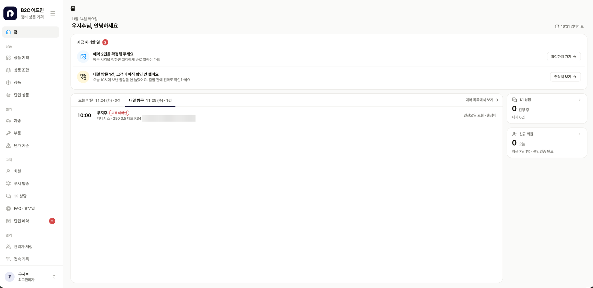
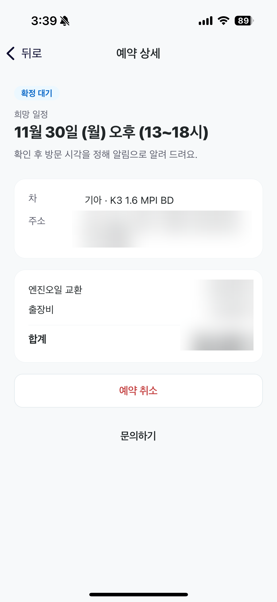
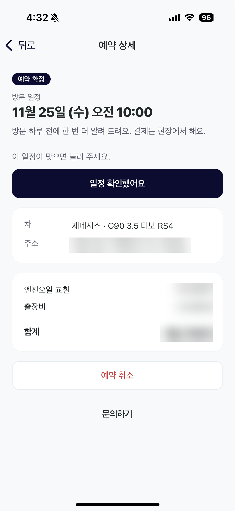
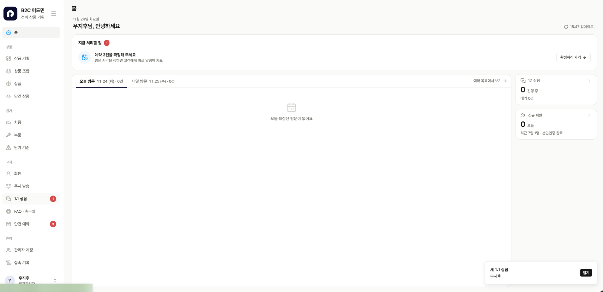
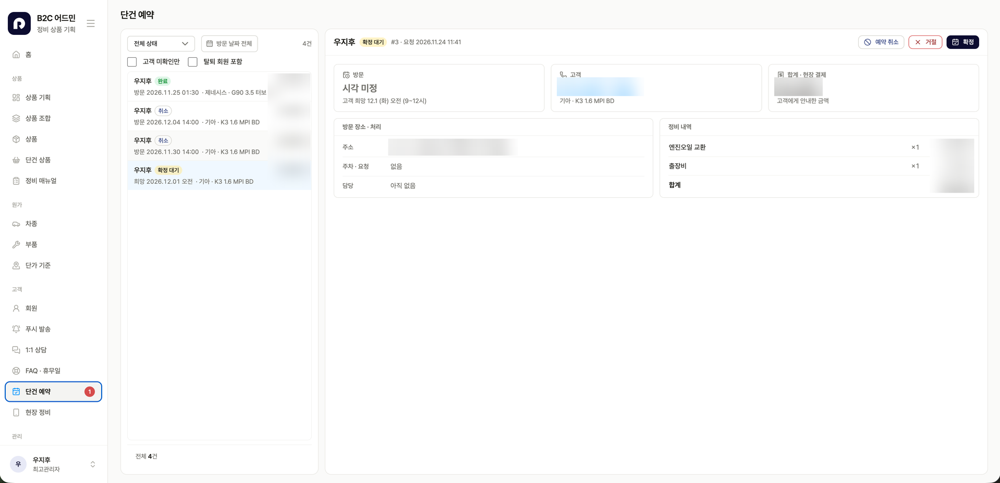
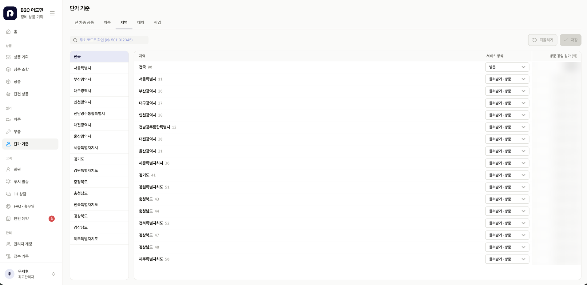
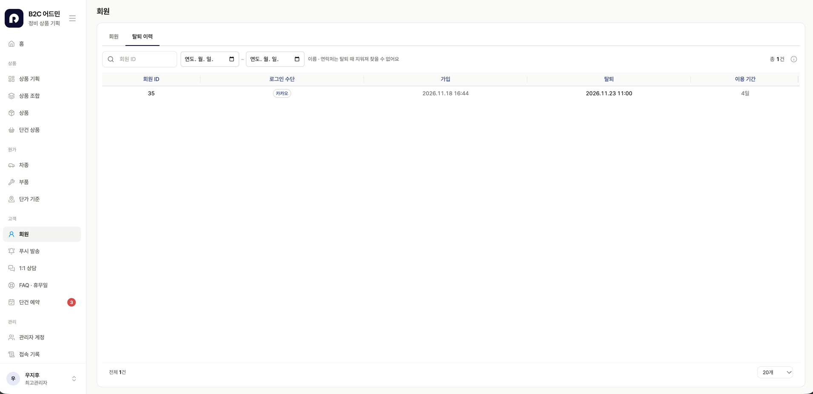
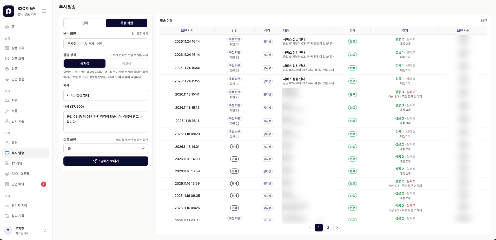
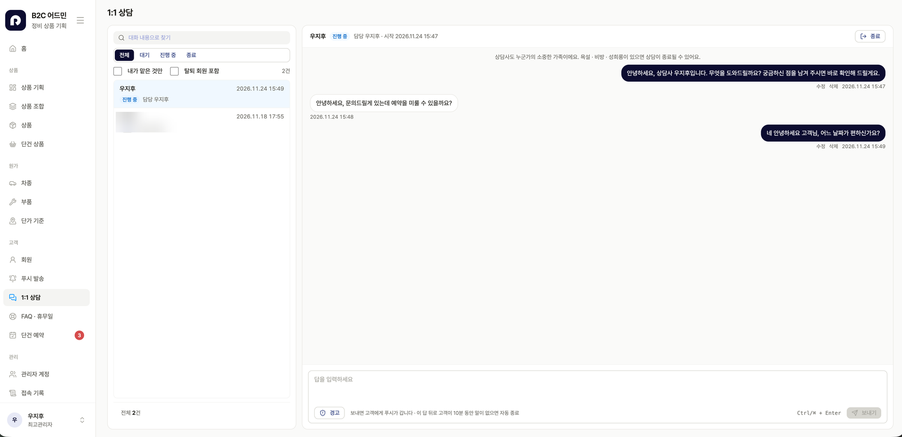
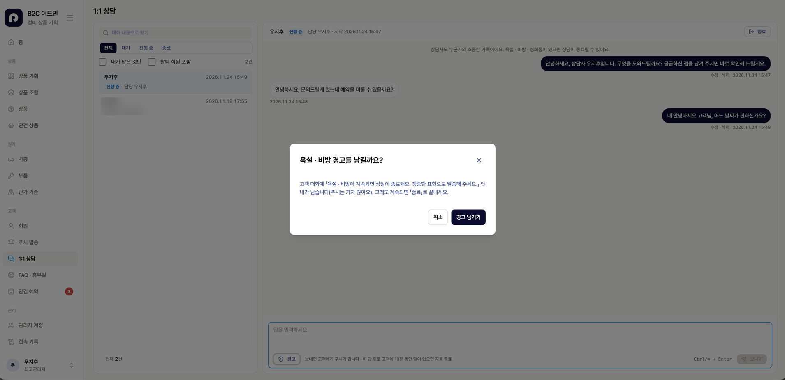

앱 · 어드민 · 서버를 한 사람이
두 달 남짓 동안 서버 커밋 260여 개, 도메인 모듈 14개, 서버 테스트 300개 이상. dev 환경에서 실기기로 돌려 보는 단계
계정은 한 사람에 하나
본인인증으로 같은 사람임이 확인되면 묻지 않고 기존 계정에 합치고, 합친 뒤에 알린다
광고성 푸시는 서버가 거절
마케팅 수신 동의자만 골라낼 수 있기 전까지는 "조심해서 쓰자" 대신 아예 보낼 수 없게 막았다
로컬에선 안 보이던 장애를 테스트로 고정
본인인증 전부 거절, 운영 환경에서만 나는 로그아웃 오류. 원인을 찾은 뒤 같은 실수가 다시 통과하지 못하게 테스트로 막았다
01시작 — 정한 상품을 실제로 팔 수 있게
상품 기획 도구로 정비 멤버십의 구성과 가격을 정하고 나니, 다음 질문은 고객이 이걸 어떻게 사고 쓰게 할 것인가였습니다. 고객은 앱에서 내 차를 고르고 멤버십이나 단건 정비를 예약합니다. 운영 매니저는 어드민에서 예약을 확정하고 상담에 답합니다. 둘 다 같은 서버의 상품, 가격, 회원 데이터를 봐야 했기 때문에 세 가지를 한 번에 설계했습니다.
서버까지 직접 맡았습니다. 구현은 Claude Code로 했지만, 정책을 정하고 선택지를 비교하는 일은 제가 했습니다. 사업 판단이 필요한 지점은 선택지와 장단점을 정리해 사업 책임자에게 물었습니다.
02고객 앱 — 내 차 기준으로 가격을 보여 준다
정비 가격은 차종마다 다릅니다. 그래서 앱은 내 차를 먼저 고르게 하고, 이후 모든 상품과 예약 화면의 가격을 그 차 기준으로 보여 줍니다. 정기적으로 관리받는 멤버십과, 필요할 때만 부르는 단건 정비를 홈에서 바로 나눠 고르게 했습니다.
금액 · 주소 블러 처리
- 예약은 단계가 열리는 순서대로 — 받을 정비, 내 차, 주소를 정해야 날짜를 고를 수 있다. 출장비는 주소가 정해질 때 한 번만 붙고, 예상 금액이 아래에 계속 보인다
- 결제는 아직 현장에서 — 앱 결제가 붙기 전이라 "결제는 현장에서 해요"를 예약 첫 화면에 적고, 금액은 요청 때 굳힌 값으로 남긴다
03어드민 — 들어오자마자 할 일이 보이게
운영 매니저가 어드민을 열었을 때 가장 먼저 알아야 하는 건 지금 처리해야 할 일입니다. 홈 맨 위에 확정을 기다리는 예약 수를 띄우고, 오늘과 내일 방문, 진행 중인 상담, 신규 회원을 옆에 모았습니다. 새 상담이 들어오면 화면 구석에 알림이 뜹니다.

예약은 매니저가 방문 시각을 정해 확정해야 끝납니다. 확정하면 고객에게 알림이 가고, 고객은 앱에서 "일정 확인했어요"를 눌러 답합니다. 방문 전날까지 고객이 확인하지 않으면 어드민 할 일에 "출발 전에 전화로 확인하세요"가 뜹니다. 기사가 헛걸음하는 일을 막으려고, 확인이 안 된 방문은 사람이 한 번 더 챙기게 했습니다.




가격의 바탕이 되는 단가도 어드민에서 관리합니다. 지역 단가는 직접 넣은 값만 저장하고, 비어 있으면 상위 지역 값을 따르게 했습니다. 전국 값 하나만 바꿔도 따로 정하지 않은 지역이 모두 따라오고, 화면에는 어디서 물려받은 값인지 함께 보입니다. 원가가 없는 차종은 0원으로 계산하지 않고 가격에서 빼서, 원가 누락이 싼 가격으로 새어 나가지 않게 했습니다.

04계정 — 한 사람은 한 계정
로그인은 카카오, 네이버, 애플, 아이디 중에 고를 수 있습니다. 그런데 정비 예약과 방문에는 연락처가 꼭 필요해서 본인인증을 필수로 받습니다. 그러다 보니 카카오로 가입했던 사람이 다른 날 애플로 들어와 본인인증을 하면, 같은 사람이 계정 두 개를 갖게 되는 문제가 생겼습니다.
- A합칠지 고객에게 묻는다 — 친절해 보이지만, 본인인증이 필수라 "합치지 않음"을 고르면 더 갈 수 있는 길이 없다
- 선택묻지 않고 먼저 가입한 계정에 합친 뒤 알린다 — 로그인 수단만 옮겨 붙이고, 어느 수단으로 들어와도 같은 계정이 되게 한다
고를 수 없는 질문은 묻지 않기로 했습니다. 대신 합친 직후 무슨 일이 있었는지와, 연결된 로그인 수단을 어디서 볼 수 있는지 바로 알려 줍니다.
합칠 때 가장 신경 쓴 건 조용히 사라지는 데이터였습니다. 회원에 붙어 있는 표마다 "통합할 때 옮길지"를 정해 문서로 남겼습니다. 예약, 상담, 내 차는 옮기고, 알림함, 푸시 토큰, 약관 동의는 옮기지 않습니다.
여러 기기에서 로그인
여러 기기에서 동시에 로그인할 수 있게 하되, 기기 하나를 세션 하나로 보고 수에 상한을 뒀습니다. 그리고 로그아웃, 모든 기기에서 로그아웃, 비밀번호 변경, 관리자 정지마다 어디까지 끊을지를 따로 정했습니다.
05탈퇴 — 치우는 순서가 핵심
탈퇴는 버튼 하나지만 뒤에서는 외부 로그인 연결, 알림, 기기, 세션, 회원 정보를 차례로 지워야 합니다. 중간에 하나가 실패하면 반쯤 지워진 계정이 남습니다. 그래서 순서를 정하고 회원 정보는 맨 마지막에 지우게 했습니다. 도중에 실패해도 다시 누르면 남은 단계부터 이어서 진행됩니다.
- 지워지는 것을 그대로 말한다 — 확인창에 실명, 생년월일, 연락처와 연결된 로그인 수단, 받은 알림이 지워지고 되돌릴 수 없다고 적었다
- 다시 가입할 수 있게 — 처음엔 지운 표시만 남기는 방식이었는데, 같은 사람이 다시 가입하면 중복으로 막혔다. 로그인 수단은 실제로 지우는 쪽으로 바꿨다
- 어드민에서도 찾을 수 없게 — 탈퇴 이력에는 가입일, 탈퇴일, 이용 기간만 남고 이름과 연락처는 남지 않는다

06알림 — 광고성은 아직 보낼 수 없게
예약 확정, 상담 답변, 점검 공지처럼 서비스에 필요한 알림은 서버가 상황마다 보내고, 운영 매니저도 어드민에서 직접 보낼 수 있습니다. 문제는 이벤트나 프로모션 같은 광고성 알림이었습니다.
- A열어 두고 주의해서 쓴다 — 정보통신망법상 광고성 알림은 마케팅 수신 동의자에게만 보낼 수 있는데, 당시 구조로는 동의자만 골라낼 방법이 없었다
- 선택서버가 거절한다 — 어드민에서 광고성을 고를 수 없고, 요청이 와도 서버가 받지 않는다
사람이 조심하는 것에 기대지 않고 구조로 막았습니다. 나중에 열 때 함께 해야 할 것(동의자만 걸러 보내기, 야간 발송 금지, 제목에 "(광고)" 표기)도 미리 적어 두었습니다.

071:1 상담 — 자동 응답에서 상담사까지
자주 묻는 질문은 FAQ 버튼으로 바로 답하고, 그래도 해결이 안 되면 상담사를 연결합니다. FAQ는 어드민에서 관리하고, 상담 가능 시간과 공휴일도 어드민에서 정합니다.


- 답하려면 먼저 맡는다 — 대기 중인 상담은 "맡기"를 눌러야 답할 수 있어서, 두 사람이 같은 고객에게 동시에 답하지 않는다
- 답이 없으면 정리된다 — 상담사가 답한 뒤 고객이 10분 동안 말이 없으면 종료되고, 종료 1분 전에 알림이 간다
- 상담사도 보호한다 — 상담 시작 때 욕설 · 비방 안내를 띄우고, 상담사는 경고를 남긴 뒤에도 계속되면 종료할 수 있다
08장애 — 로컬에서는 멀쩡했던 두 가지
본인인증이 전부 거절됐다
dev 환경에서 인증을 정상적으로 마쳐도 모두 실패로 돌아왔습니다. 인증사는 실패 코드만 줬고, 처음엔 인증사 쪽 문제로 보였습니다. 로그를 따라가 보니 원인은 우리 서버의 검증 코드였습니다. 응답 값 하나를 다른 값들처럼 복호화하고 있었는데, 하필 그 값이 복호화가 가능한 모양이라 오류 없이 엉뚱한 값이 나왔습니다. 테스트는 가짜 암호화가 값을 그대로 돌려주게 되어 있어서 모두 통과했습니다. 검증 방식을 고치고, 테스트의 가짜 암호화가 실제로 값을 바꾸게 해서 같은 실수가 다시 통과하지 못하게 했습니다.
"모든 기기에서 로그아웃"이 dev에서만 실패했다
로컬에서는 잘 되는데 dev 서버에서만 오류가 났습니다. dev는 저장소가 여러 대로 나뉜 구조라 한 번에 여러 키를 지우는 명령이 거부됐고, 로컬은 한 대짜리라 재현되지 않았습니다. 키를 하나씩 지우게 고쳤고, 키를 한곳에 모으는 다른 방법은 키 이름이 바뀌어 모든 사용자가 로그아웃되는 문제가 있어 고르지 않았습니다.
09일하는 방식 — 기록하고, 규칙으로 올린다
작업마다 무엇을 왜 했는지와 빠졌던 함정을 날짜별로 기록했습니다. 겪은 사고는 프로젝트 규칙 문서로 올려, Claude Code와 사람이 같은 규칙을 보고 일하게 했습니다. 위의 두 장애도 이렇게 규칙이 되어 다음 작업부터 같은 실수를 막고 있습니다.